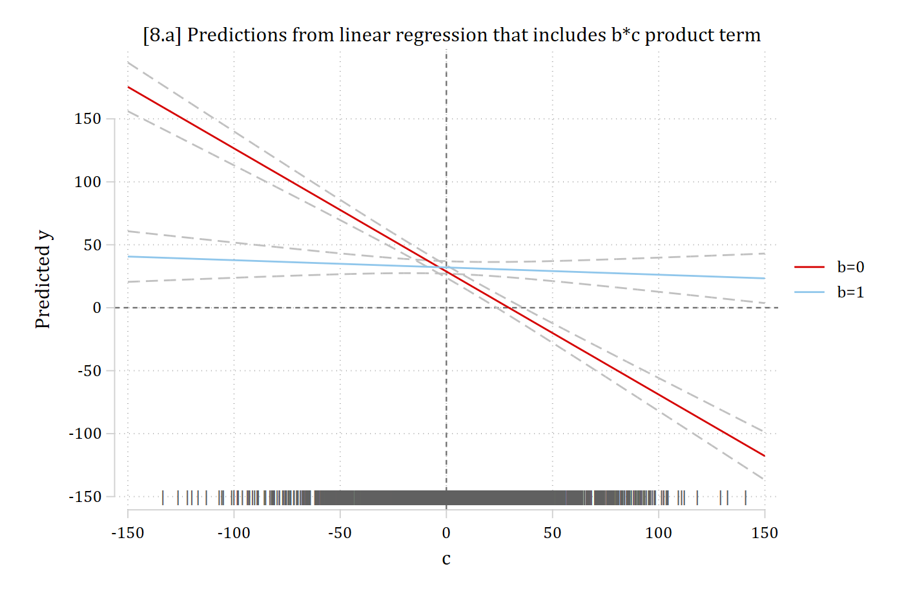
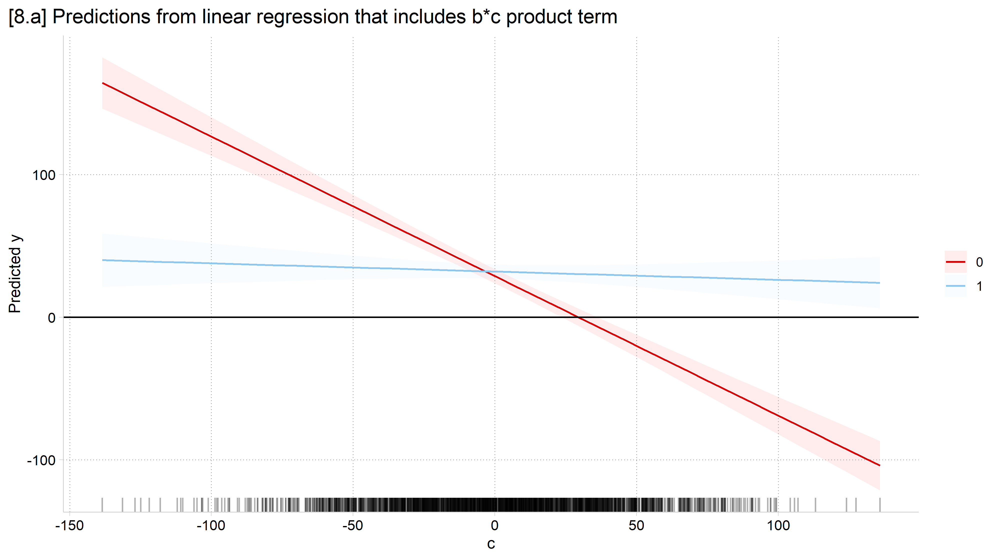
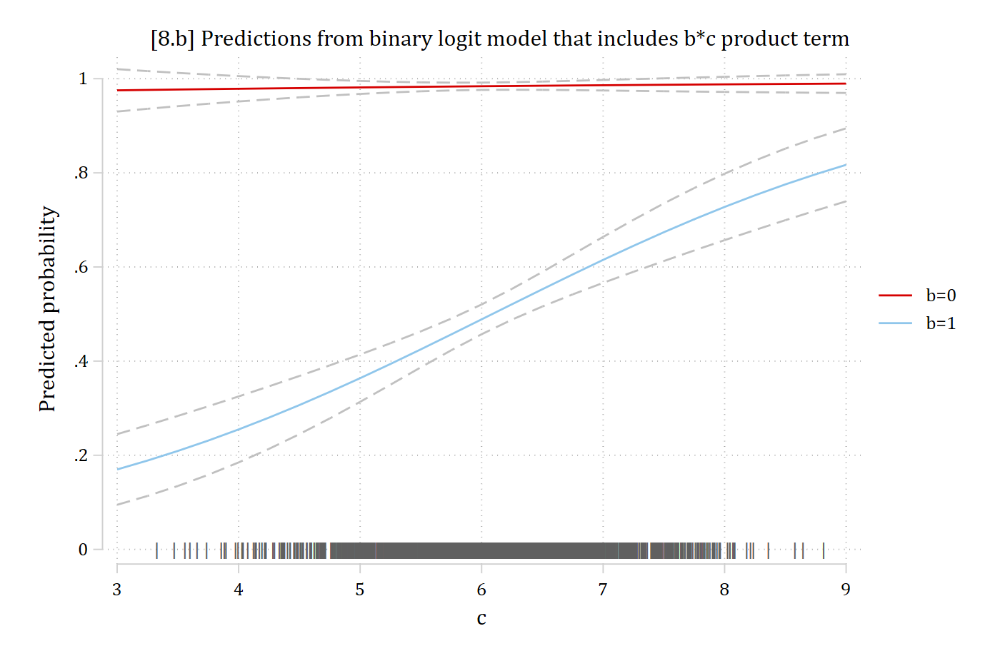
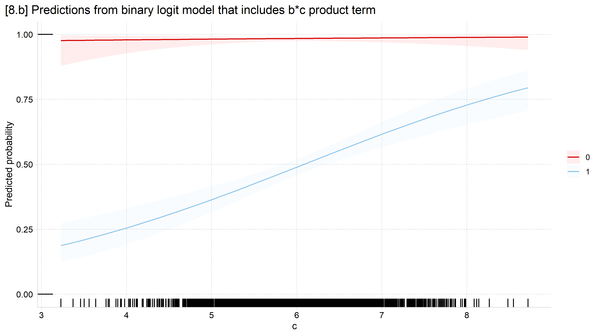
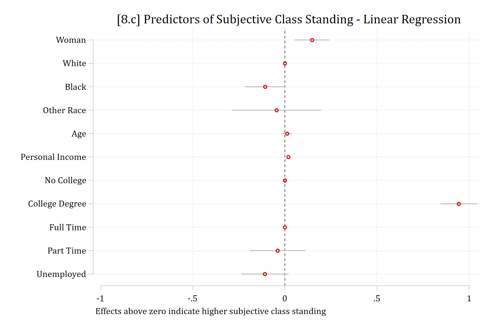
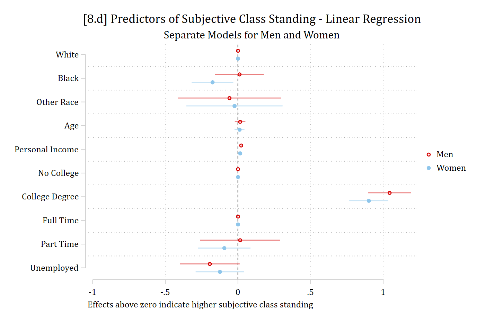
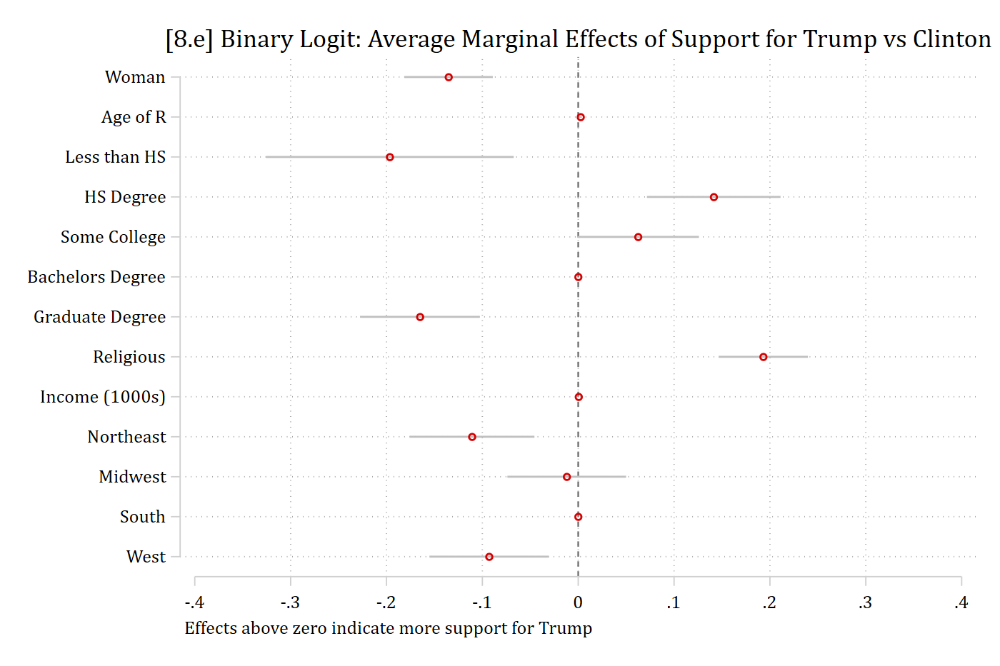

“One great virtue of good graphical representation is that it can serve to display clearly and effectively a message carried by quantities whose calculation or observation is far from simple.” (Tukey and Wilk 1966)
Visualizing data can simplify complex relationships
Visualizations often synthesize large amounts of information succinctly; relationships/patterns become clear visually
Visualizations make your data more accessible and memorable (bonus: nice visualizations make your audience less likely to fall asleep!)
“The more visual the input becomes, the more likely it is to be recognized and recalled.” (Medina 2008)
Can you extract the sunbeams from these cucumbers?
** Ex 1: Linear Regression with Interactionuse"https://tdmize.github.io/data/data/dmv_intsim01.dta", clearquiregressy b cestimatesstore mod1aquiregressy c.c##i.bestimatesstore mod1bquiregressy c.c##i.b x1estimatesstore mod1cesttab mod1a mod1b mod1c, noomit nobase se ///title("Linear interaction models")
Linear interaction models
------------------------------------------------------------
(1) (2) (3)
y y y
------------------------------------------------------------
b 4.600
(3.657)
c -0.537*** -0.978*** -0.978***
(0.0465) (0.0629) (0.0629)
1.b 3.107 3.199
(3.571) (3.574)
1.b#c.c 0.920*** 0.920***
(0.0908) (0.0908)
x1 -1.204
(1.786)
_cons 28.19*** 28.86*** 28.81***
(2.587) (2.525) (2.526)
------------------------------------------------------------
N 2000 2000 2000
------------------------------------------------------------
Standard errors in parentheses
* p<0.05, ** p<0.01, *** p<0.001
library(foreign) # load Stata datasetslibrary(ggplot2) # main graphics packagelibrary(dplyr) # data manipulation toolslibrary(marginaleffects) # predictions and marginal effectslibrary(modelsummary) # coefficient plots & nice tableslibrary(cleanplots) # Mize's graphics scheme## Use cleanplots colors, markers, lines, and theme for all graphs ##cleanplots_defaults()theme_update(plot.title.position ="plot") # titles start at left edge of graph# Simulated data for interaction exsintsim01 <-read.dta("https://tdmize.github.io/data/data/dmv_intsim01.dta")# b is a binary (0/1) group variableintsim01$b <-factor(intsim01$b)## Ex 1: Linear Regression with Interaction ##mod1a <-lm(y ~ b + c, data = intsim01)mod1b <-lm(y ~ b * c, data = intsim01)mod1c <-lm(y ~ b * c + x1, data = intsim01)modelsummary(list(mod1a, mod1b, mod1c), stars =TRUE)
(1)
(2)
(3)
+ p < 0.1, * p < 0.05, ** p < 0.01, *** p < 0.001
(Intercept)
28.189***
28.856***
28.809***
(2.587)
(2.525)
(2.526)
b1
4.600
3.107
3.199
(3.657)
(3.571)
(3.574)
c
-0.537***
-0.978***
-0.978***
(0.047)
(0.063)
(0.063)
b1 × c
0.920***
0.920***
(0.091)
(0.091)
x1
-1.204
(1.786)
Num.Obs.
2000
2000
2000
R2
0.063
0.109
0.109
R2 Adj.
0.062
0.108
0.107
AIC
23297.1
23198.9
23200.4
BIC
23319.5
23226.9
23234.0
Log.Lik.
-11644.533
-11594.450
-11594.222
F
67.289
81.310
61.079
RMSE
81.72
79.70
79.69
Some sunbeams of interest: (1) Is there an interaction effect between b and c? (2) Is the effect of c (when b = 0) positive or negative? (3) Is the effect of c (when b = 1) positive or negative? (4) Where across the range of c is the difference between b = 0 and b = 1 statistically significant? (5) Where is the observed data?
// 8.a - Plot the predictionsestimatesrestore mod1c
(results mod1c are active now)
qui margins, at(c=(-150(5)150) b=(0 1))*Generate variables to make rugs on plotgen pipe = "|"if c != . // What rug looks likegen where = -150 // Where on y-axis to put rugmarginsplot, /// recastci(rline) ciopt(lpat(dash) col(gs12)) plotopt(msym(none)) ///addplot(scatter where c, ms(none) mlabel(pipe) mlabcol(gs6) /// xlab(-150(50)150) ylab(-150(50)150) xline(0) yline(0) legend(order(3 "b=0" 4 "b=1"))) ///title("[8.a] Predictions from linear regression that includes b*c product term") ///ytitle("Predicted y") xtitle("c")
Variables that uniquely identify margins: c b

# 8.a - Plot the predictionsplot_predictions(mod1c, condition =c("c", "b")) +geom_rug(data = intsim01, mapping =aes(x = c), sides ="b", alpha =0.3,inherit.aes =FALSE) +geom_hline(yintercept =0) +labs(x ="c", y ="Predicted y", color ="b", fill ="b",title ="[8.a] Predictions from linear regression that includes b*c product term")

Can you extract the sunbeams from these cucumbers?
** Ex 2: Binary Logit with Interactionuse"https://tdmize.github.io/data/data/dmv_intsim02.dta", clearquilogity b cestimatesstore mod2aquilogity c.c##i.bestimatesstore mod2bquilogity c.c##i.b x1estimatesstore mod2cesttab mod2a mod2b mod2c, noomit nobase se ///title("Logit interaction models")
Logit interaction models
------------------------------------------------------------
(1) (2) (3)
y y y
------------------------------------------------------------
y
b -4.225***
(0.262)
c 0.487*** 0.147 0.148
(0.0832) (0.313) (0.313)
1.b -6.363** -6.366**
(1.950) (1.950)
1.b#c.c 0.366 0.367
(0.325) (0.325)
x1 -0.0575
(0.0622)
_cons 1.257* 3.238 3.235
(0.539) (1.877) (1.877)
------------------------------------------------------------
N 2000 2000 2000
------------------------------------------------------------
Standard errors in parentheses
* p<0.05, ** p<0.01, *** p<0.001
# Simulated data for interaction exsintsim02 <-read.dta("https://tdmize.github.io/data/data/dmv_intsim02.dta")intsim02$b <-factor(intsim02$b)## Ex 2: Binary Logit with Interaction ##mod2a <-glm(y ~ b + c, family = binomial, data = intsim02)mod2b <-glm(y ~ b * c, family = binomial, data = intsim02)mod2c <-glm(y ~ b * c + x1, family = binomial, data = intsim02)modelsummary(list(mod2a, mod2b, mod2c), stars =TRUE)
(1)
(2)
(3)
+ p < 0.1, * p < 0.05, ** p < 0.01, *** p < 0.001
(Intercept)
1.257*
3.238+
3.235+
(0.539)
(1.877)
(1.876)
b1
-4.225***
-6.363**
-6.366**
(0.262)
(1.950)
(1.949)
c
0.487***
0.147
0.148
(0.083)
(0.313)
(0.313)
b1 × c
0.366
0.367
(0.325)
(0.325)
x1
-0.057
(0.062)
Num.Obs.
2000
2000
2000
AIC
1520.3
1521.0
1522.2
BIC
1537.1
1543.4
1550.2
Log.Lik.
-757.157
-756.521
-756.094
F
139.389
96.128
72.239
RMSE
0.36
0.36
0.36
Some sunbeams of interest: (1) Is there an interaction effect between b and c? (2) Is the effect of c (when b = 0) positive or negative? (3) Is the effect of c (when b = 1) positive or negative? (4) Where across the range of c is the difference between b = 0 and b = 1 statistically significant? (5) Where is the observed data?
// 8.b - Plot the predictionsestimatesrestore mod2c
(results mod2c are active now)
qui margins, at(c=(3(.25)9) b=(0 1))*Generate variables to make rugs on plotgen pipe = "|"if c != . // What rug looks likegen where = 0 // Where on y-axis to put rugmarginsplot, /// recastci(rline) ciopt(lpat(dash) col(gs12)) plotopt(msym(none)) ///addplot(scatter where c, ms(none) mlabel(pipe) mlabcol(gs6) /// xlab(3(1)9) ylab(0(.2)1) legend(order(3 "b=0" 4 "b=1"))) ///title("[8.b] Predictions from binary logit model that includes b*c product term") ///ytitle("Predicted probability") xtitle("c")
Variables that uniquely identify margins: c b

# 8.b - Plot the predictionsplot_predictions(mod2c, condition =c("c", "b"), rug =TRUE) +labs(x ="c", y ="Predicted probability", color ="b", fill ="b",title ="[8.b] Predictions from binary logit model that includes b*c product term")

*Curious how this is possible? See Mize 2019 on nonlinear interaction effects
Giant regression tables in talks = ☹
[11.0] Linear Regression Results - Log Hourly Wages
-----------------------------------------------------------------------------------------------------------
(1) (2) (3)
-----------------------------------------------------------------------------------------------------------
Woman R -0.37*** (0.01) -0.37*** (0.01) -0.36*** (0.01)
high school 0.36*** (0.01) 0.35*** (0.01)
junior college 0.57*** (0.02) 0.56*** (0.02)
bachelor 0.78*** (0.02) 0.76*** (0.02)
graduate 1.02*** (0.02) 0.98*** (0.02)
black -0.08*** (0.01) -0.03* (0.01)
other -0.05** (0.02) -0.07*** (0.02)
age of respondent 0.01*** (0.00) 0.01*** (0.00)
Currently Married 0.15*** (0.01)
Number of Children -0.00 (0.00)
catholic 0.05*** (0.01)
jewish 0.17*** (0.03)
none 0.01 (0.01)
other 0.01 (0.03)
buddhism 0.06 (0.07)
hinduism 0.25* (0.10)
other eastern 0.38* (0.17)
moslem/islam -0.29** (0.10)
orthodox-christian 0.07 (0.10)
christian -0.01 (0.04)
native american 0.01 (0.20)
inter-nondenominat~l -0.05 (0.08)
Lives in Metro Area 0.05*** (0.01)
Midwest -0.09*** (0.01)
South -0.13*** (0.01)
West -0.04** (0.01)
Constant 2.65*** (0.01) 1.61*** (0.02) 1.61*** (0.02)
-----------------------------------------------------------------------------------------------------------
Observations 31102 31021 30876
-----------------------------------------------------------------------------------------------------------
Standard errors in parentheses
* p<0.05, ** p<0.01, *** p<0.001
Coefficient plots
Coefficient plots are very effective for replacing regression tables (of coefficients) in talks and (sometimes) in articles/reports
Coefficient plots also display multiple model results better than tables— making it easy to compare estimates across models
Measures of uncertainty (e.g., CIs) are also easily incorporated and visually easily processed
(addhealth4_dmv.dta | Add Health Wave IV | DMV Workshop)
// 8.c - Coefficients from a linear regression modelquiregress subjclass i.woman i.race3 c.age c.income i.college i.workstatcoefplot, xline(0) xlab(-1(.5)1) baselevels ciop(col(gs12)) drop(_cons 0.woman) ///title("[8.c] Predictors of Subjective Class Standing - Linear Regression")///note("Effects above zero indicate higher subjective class standing")

# Add Health Wave 4 Dataah4 <-droplevels(read.dta("https://tdmize.github.io/data/data/addhealth4.dta"))# Subjective class standing is a 1 to 10 scaleah4$subjclass <-as.numeric(ah4$subjclass)# 8.c - Coefficients from a linear regression modelreg_sc <-lm(subjclass ~ woman + race3 + age + income + college + workstat, data = ah4)modelplot(reg_sc, coef_omit ="Intercept") +geom_vline(xintercept =0, linetype ="dashed", color ="gray20") +scale_x_continuous(breaks =seq(-1, 1.5, .5)) +scale_y_discrete(limits = rev) +labs(title ="[8.c] Predictors of Subjective Class Standing - Linear Regression",caption ="Effects above zero indicate higher subjective class standing")
// 8.d - Separate models for men and womenquiregress subjclass i.race3 c.age c.income i.college i.workstat if woman == 0eststore scmenquiregress subjclass i.race3 c.age c.income i.college i.workstat if woman == 1eststore scwomcoefplot (scmen, label("Men")) (scwom, label("Women")), ///xline(0) xlab(-1(.5)1) baselevels ciop(col(*.5)) drop(*_cons) ///title("[8.d] Predictors of Subjective Class Standing - Linear Regression")///subtitle("Separate Models for Men and Women") ///note("Effects above zero indicate higher subjective class standing")

# 8.d - Fit separate models for men and womenreg_men <-lm(subjclass ~ race3 + age + income + college + workstat,data =subset(ah4, woman =="Man"))reg_wom <-lm(subjclass ~ race3 + age + income + college + workstat,data =subset(ah4, woman =="Woman"))mp_gender <-modelplot(list("Men"= reg_men, "Women"= reg_wom),coef_omit ="Intercept", draw =FALSE)ggplot(mp_gender, aes(x = estimate, y = term, color = model)) +geom_linerange(aes(xmin = conf.low, xmax = conf.high), alpha = .5,position =position_dodge(width = .5)) +geom_point(size =2.5, position =position_dodge(width = .5)) +geom_vline(xintercept =0, linetype ="dashed", color ="gray20") +scale_x_continuous(breaks =seq(-1, 1.5, .5)) +scale_y_discrete(limits = rev) +labs(x ="Coefficient estimates and 95% confidence intervals", y ="", color ="",title ="[8.d] Predictors of Subjective Class Standing - Linear Regression",subtitle ="Separate Models for Men and Women",caption ="Effects above zero indicate higher subjective class standing")
(pew16_dmv.dta | Pew 2016 Pre-Election Data | DMV Workshop)
quilogit trump i.woman c.age ib4.educ i.religB c.income ib3.region, or* Average marginal effects (AMEs) forall predictorsmargins, dydx(*) post
Average marginal effects Number of obs = 1,604
Model VCE: OIM
Expression: Pr(trump), predict()
dy/dx wrt: 1.woman age 1.educ 2.educ 3.educ 5.educ 1.religB income 1.region
2.region 4.region
-------------------------------------------------------------------------------
| Delta-method
| dy/dx std. err. z P>|z| [95% conf. interval]
--------------+----------------------------------------------------------------
woman |
Woman | -0.135 0.024 -5.742 0.000 -0.181 -0.089
age | 0.002 0.001 3.576 0.000 0.001 0.004
|
educ |
Less than HS | -0.197 0.066 -2.981 0.003 -0.326 -0.067
HS Degree | 0.141 0.036 3.978 0.000 0.072 0.211
Some College | 0.062 0.032 1.931 0.053 -0.001 0.126
Graduate D.. | -0.165 0.032 -5.176 0.000 -0.228 -0.103
|
religB |
Religious | 0.193 0.024 8.121 0.000 0.146 0.240
income | 0.000 0.000 1.761 0.078 -0.000 0.001
|
region |
Northeast | -0.111 0.033 -3.335 0.001 -0.176 -0.046
Midwest | -0.012 0.032 -0.379 0.705 -0.074 0.050
West | -0.093 0.032 -2.926 0.003 -0.155 -0.031
-------------------------------------------------------------------------------
Note: dy/dx for factor levels is the discrete change from the base level.
eststore ames// 8.e - Coefficient plot of the AMEscoefplot ames, xline(0) xlab(-.4(.1).4) ciop(col(gs12)) /// baselevels drop(0.woman 0.religB) ///title("[8.e] Binary Logit: Average Marginal Effects of Support for Trump vs Clinton") ///note("Effects above zero indicate more support for Trump")

# Pew 2016 election datapew <-droplevels(read.dta("https://tdmize.github.io/data/data/pew16.dta"))# Bachelor's degree and the South as reference groups (as in Stata ex)pew$educ <-relevel(pew$educ, ref ="Bachelors Degree")pew$region <-relevel(pew$region, ref ="South")logit_trump <-glm(trump ~ woman + age + educ + religB + income + region,family = binomial, data = pew)# Average marginal effects (AMEs) for all predictorsames <-avg_slopes(logit_trump)ames
Term Contrast Estimate Std. Error z Pr(>|z|) S 2.5 %
age dY/dX 0.002467 0.000690 3.576 < 0.001 11.5 1.11e-03
educ Graduate Degree - Bachelors Degree -0.165091 0.031898 -5.176 < 0.001 22.1 -2.28e-01
educ HS Degree - Bachelors Degree 0.141389 0.035546 3.978 < 0.001 13.8 7.17e-02
educ Less than HS - Bachelors Degree -0.196606 0.065953 -2.981 0.00287 8.4 -3.26e-01
educ Some College - Bachelors Degree 0.062486 0.032355 1.931 0.05345 4.2 -9.29e-04
income dY/dX 0.000414 0.000235 1.761 0.07827 3.7 -4.68e-05
region Midwest - South -0.011973 0.031595 -0.379 0.70473 0.5 -7.39e-02
region Northeast - South -0.110794 0.033218 -3.335 < 0.001 10.2 -1.76e-01
region West - South -0.092941 0.031768 -2.926 0.00344 8.2 -1.55e-01
religB Religious - Not Religious 0.193025 0.023768 8.121 < 0.001 50.9 1.46e-01
woman Woman - Man -0.135261 0.023557 -5.742 < 0.001 26.7 -1.81e-01
97.5 %
0.003819
-0.102572
0.211058
-0.067341
0.125901
0.000874
0.049953
-0.045689
-0.030677
0.239609
-0.089091
Type: response
# Nominal predictors in the model: rename the estimates so each is uniqueames$term <-paste(ames$term, ames$contrast)# 8.e - Coefficient plot of the AMEsmodelplot(ames) +geom_vline(xintercept =0, linetype ="dashed", color ="gray20") +scale_x_continuous(breaks =seq(-.4, .4, .1)) +labs(x ="Average marginal effect",title ="[8.e] Binary Logit: Average Marginal Effects of Support for Trump vs Clinton",caption ="Effects above zero indicate more support for Trump")